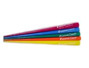
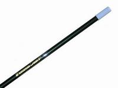
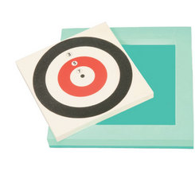

競技内容
５〜１０ｍ先の的に吹矢を吹いて得点を競うゲーム。 日本生まれのスポーツです。 腹式呼吸をするので、美容と健康に良い・・・ハズです。たぶん。

◆矢
20cm程度で、ビニールフィルム円錐形を巻いた先に、釘の頭をつけたもの。

◆筒
120cm程度で、カーボン樹脂やグラスファイバー製等、様々。筒の直径は13mm。
『・・・釣竿』という感想が漏れることが多々あります。

◆的
大きさは30cm程度。
発泡ポリエチレンに貼り付けるのが一般的。
半径30mm、60mm、90mm、120mmの同心円で、内側から7点，5点，3点，1点。
床から160cmの高さに設置します。
10m離れると、当たらなさそうに感じますが、少し練習すると、コツがつかめます。 （それでも、当たらない人は当たりませんが・・・）